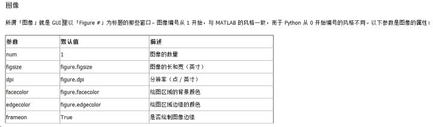
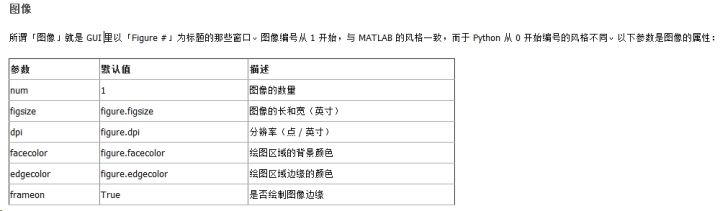

Pyplot相关
subplot
plt.subplot(221) # 表示分成两行两列，占用第一个，即第一行第一列的子图 plt.subplot(222) # 表示分成两行两列，占用第二个，即第一行第二列的子图 plt.subplot(212) # 表示分成两行一列，占用第二个，即第二行第一列的子图subplot(numRows, numCols, plotNum)
如果3个参数都小于10的话，可以统一成一个整数
subplot(221) = subplot(2,2,1)

独自一人,独自Coding...
subplot
plt.subplot(221) # 表示分成两行两列，占用第一个，即第一行第一列的子图
plt.subplot(222) # 表示分成两行两列，占用第二个，即第一行第二列的子图
plt.subplot(212) # 表示分成两行一列，占用第二个，即第二行第一列的子图
subplot(numRows, numCols, plotNum)
如果3个参数都小于10的话，可以统一成一个整数
subplot(221) = subplot(2,2,1)

Pandas 读取列数据
city_names = pd.Series(['San Francisco', 'San Jose', 'Sacramento'])
population = pd.Series([852469, 1015785, 485199])
data = pd.DataFrame({ 'City name': city_names, 'Population': population })
data['City_Name'] #获取'City_Name'这个列对象，返回值类型为Series
data[['City_Name']] #获取'City_Name'列包含的数据，返回值类型为DateFrame
Your CPU supports instructions that this TensorFlow binary was not compiled to use: AVX2 FMA
加入以下代码
import os
os.environ['TF_CPP_MIN_LOG_LEVEL'] = '2'
weex中通过ref访问组件的两种情况:
<div ref="test"></div>
这种直接写入的可以通过this.$refs['test']获取到组件对象
<div ref="'test'+index" v-for="(item,index) in items"></div>
上面这种通过v-for或者其他vue语法动态嵌入的组件，则需要通过this.\(refs[`test\){index}][0]去获取，因为淡出的this.$refs["test${index}`"]获取到的是包含一个元素的数组对象
如果你仅仅是装了pylint用来检测python代码，那么你在写django程序，尤其是使用model的一些查询语句时，如
App.objects.all()
肯定会经常会被VSCode提示App 没有objects这个属性，虽然这个不影响代码的运行，但作为有强迫症的我们，怎么能容忍我们的代码还没运行就被标识为错误,实在是很影响心情。
Django使用了大量的元编程思想，其中会有大量的修改对象属性和行为的操作，pylint提示的不存在的属性和方法会在程序运行中被django动态的加入，所以并不会影响程序运行。
所以在网上稍微找了下，发现这个叫做pylint-django的pylint的插件可以去掉这些恼人的提示。
安装很简单,和pylint一样
pip3 install pylint-django
然后通过pylint加载这个插件
pylint --load-plugins pylint_django
在VSCode里可以通过修改setting中的python.linting.pylintArgs这个键的值达到同样的目的
"python.linting.pylintArgs": ["--load-plugins", "pylint_django"]
然后重启VSCode就好了